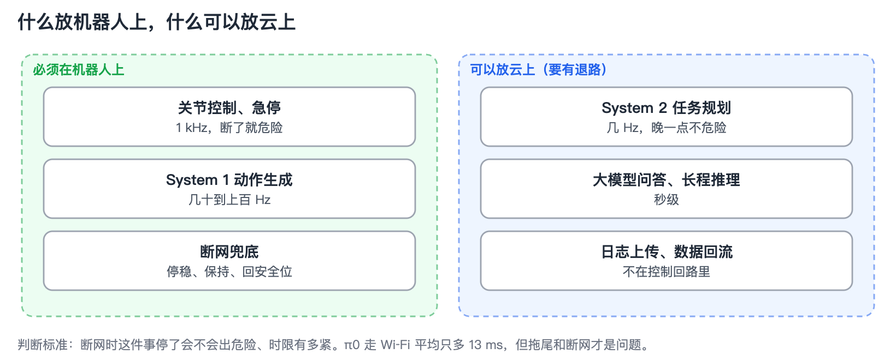
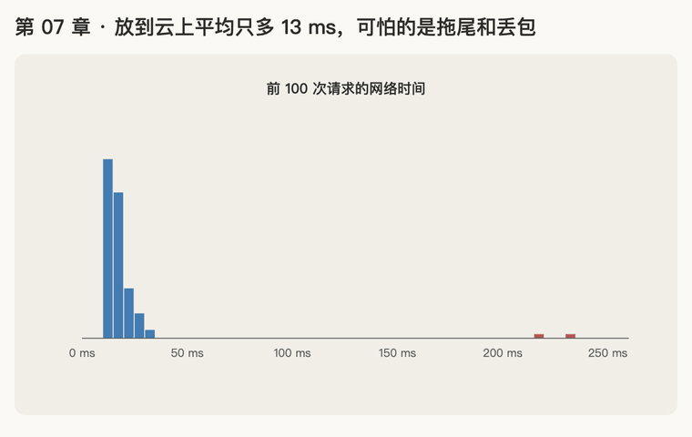

第 7 章 · 功耗、散热和端云分工
本地运行
git clone https://github.com/wikieden/robot-edge-inference
cd robot-edge-inference/code/notebooks
pip install jupyterlab torch numpy
jupyter lab ch07_power_and_cloud.ipynb也可以下载后直接用 VS Code 打开 .ipynb 运行。需要 GPU 的章节在 Colab 里选「代码执行程序 → 更改运行时类型 → GPU」。
本章回答：一次推理耗多少电？计算模组会不会把电池吃光？哪些事可以交给云上的大模型，哪些必须留在机器人身上？
编写日期：2026-11-26 · 上一章：第 6 章 实时调度 · 下一章：第 8 章 综合案例
对应原文：GR00T 2 白皮书 Fig. 19（Jetson Thor 120 W 模式下 123.97 ms，讲义见 gr00t2 第 10 章）；vla-deep-dive/materials/text/papers/pi0-2410.24164.txtL921–L923、Table I L947–L949（走 Wi‑Fi 板外推理多 13 ms）；《深入理解 AI Infra》第 12 章ai-infra/materials/ai-infra-book/manuscripts/12-端边云协同.md§12.1.5（能耗与续航、翻转条件）
本章缩写：W = watt（瓦，功率）· J = joule（焦耳，能量）· Wh = watt-hour（瓦时，电池能量）· p50 = 50th percentile（中位数）· p99 = 99th percentile（第 99 百分位）· Wi‑Fi = 无线局域网 · nvpmodel = Jetson 切换功率模式的命令。全部缩写见附录 · 缩写与术语表
讲解
第一步：能量 = 功率 × 时间（2026-11-26）
类比：烧水。 电水壶 2000 W 烧 3 分钟，和 1000 W 烧 6 分钟，用的电一样多。推理也是：板子功率越大，跑得越快；耗的能量看两者的乘积。
- \(E\)：能量，单位焦耳 J；
- \(P\)：功率，单位瓦 W；
- \(t\)：时间，单位秒 s。
例子：GR00T 2 在 Jetson Thor 的 120 W 模式下优化后一次推理 123.97 ms。按功率模式上限算：\(120 \times 0.12397 = 14.9\) J。这是偏大的估计，实际功率通常达不到模式上限。
电池能撑多久：电池能量（Wh）÷ 负载功率（W）= 小时。
例子（电池 480 Wh、电机平均 300 W 都是编的，和机器人软硬件架构第 5 章的电池例子一致）：
| 只算什么 | 功率 | 能撑 |
|---|---|---|
| 只有计算模组 | 60 W | \(480 \div 60 = 8.0\) h |
| 计算 + 电机 | 360 W | \(480 \div 360 = 1.33\) h |
计算占总功率 \(60 \div 360 = 16.7\%\)。对走来走去的人形机器人，电机往往才是大头；但对一直开着相机、一直在推理的机械臂，计算的比例会高得多。
一句话：能量是功率乘时间；电池能撑多久，看总功率，不只看计算模组。
第二步：功率模式和散热（2026-11-26）
功率模式（第 2 章第四步）：用 nvpmodel 在几档之间切换。档位低，频率低，推理慢，但省电、发热少。同一个模型在不同档位上的延迟要分别测，GR00T 2 白皮书报告 Thor 数字时就写明了是 120 W 模式。
散热：机器人外壳里空间小、风道窄，板子温度上去后会自动降频。常见现象是：刚开机测延迟很好看，跑十几分钟后 p99 慢慢变差。
两条工程做法：
- 在热稳定后测：先连续跑一段时间，等温度不再上升，再记延迟分布；
- 按实际档位和温度留余量：第 6 章的时延预算里，推理时间要用"最热、最低档位"下的 p99。
一句话：档位是用速度换电和热；延迟要在热稳定后、按实际档位测。
第三步：放到云上：平均很快，拖尾很长（2026-11-26）
π0 论文里，移动机器人的推理放在板外、走 Wi‑Fi（L921–L923），平均只多 13 ms（Table I）。听起来放云上很划算：云上 GPU 大得多。问题在于网络时间不是固定的。
例子（网络参数都是编的：基础 13 ms，再加平均 5 ms 的随机拖尾；2% 的请求丢包重传，多等 200 ms；随机数种子 0，模拟 1000 次）：
| 网络时间 | 加上推理 73 ms | |
|---|---|---|
| 中位数 p50 | 16.6 ms | 约 90 ms |
| p99 | 219.9 ms | 约 293 ms |
只有 2% 的请求丢包，p99 却被拉到 200 ms 以上（第 6 章说过，控制回路要按 p99 设计）。而且这还没算断网：机器人走到信号盲区，请求根本回不来。
一句话：板外推理平均只多十几 ms，但丢包和断网会把最坏情况拉到几百 ms 甚至无穷大。
第四步：什么放机器人上，什么可以放云上（2026-11-26）
判断标准两条：断网时这件事停了会不会出危险；它的时限有多紧。

| 放哪 | 做什么 | 为什么 |
|---|---|---|
| 必须在机器人上 | 关节控制、急停 | 1 kHz，断了就危险 |
| System 1 动作生成（第 6 章第四步） | 几十到上百 Hz，网络撑不住 | |
| 断网兜底：停稳、保持、回安全位 | 断网时唯一能依靠的 | |
| 可以放云上（要有退路） | System 2 任务规划 | 几 Hz，晚一点只是慢，不危险 |
| 大模型问答、长程推理 | 秒级 | |
| 日志上传、数据回流 | 不在控制回路里 |
《深入理解 AI Infra》§12.1.5 给了一个通用的判断方法：先算端侧的时间下限，下限已经超过时限，端侧一定不行；下限低于时限，只能说明还没被排除，还要实测。云侧同理，再加上网络的 p99。
一句话：断了会危险、时限紧的留在机器人上；慢一点没关系的可以上云，但必须有断网时的退路。
动画演示：板外推理的拖尾

可交互版：animations/07-power-and-cloud.html（滑块：丢包率）
怎么看：
- 每根柱子是落在这个时间段里的请求数，大多挤在 13–25 ms（第三步）；
- 绿虚线是 p50，只比 13 ms 多一点；
- 右边那一小撮红色是丢包重传的请求，红虚线 p99 被它们拉到 200 ms 以上；
- 拖滑块：丢包率超过 1% 后，p99 就跳到 200 ms 附近。
- 动画用的是浏览器里的随机数，p50 / p99 和代码对照里算出来的略有差别（16.5 / 217.7 vs 16.6 / 219.9 ms），规律一样。
练习与作答记录
题 1（第一步）：AGX Orin 在 30 W 模式下一次推理 200 ms，Thor 在 120 W 模式下一次推理 60 ms。按功率模式上限算，哪个一次推理更省电？各多少 J？
作答：（待作答）
题 2（第一步）：一台机器人电池 1 kWh（1000 Wh），计算模组 100 W，电机平均 400 W。能撑几小时？计算占总功率的百分之几？
作答：（待作答）
题 3（第三、四步）：有人提议"把 System 1 也放到云上，云上 GPU 快 10 倍"。用本章的两条判断标准说说为什么不行。
作答：（待作答）
口诀
能量等于功率乘时间，续航要算总功率；
档位换速度，热了会降频；
上云平均快，拖尾丢包断网才要命；
危险紧的留身上，慢的上云带退路。
本章复习卡片
附录 · 延伸阅读
留给以后深入学习用，不影响本章主线。★ 是建议先读的。
推荐阅读
| 读什么 | 读哪里 | 读它为了什么 |
|---|---|---|
| ★ 《深入理解 AI Infra》第 12 章 | ai-infra/materials/ai-infra-book/manuscripts/12-端边云协同.md §12.1.5、§12.2、§12.4 |
端侧能耗、跨设备分工、无线网络下的交互与恢复 |
| π0 论文 | vla-deep-dive/materials/text/papers/pi0-2410.24164.txt L918–L951 |
板上 vs 板外的真实耗时 |
| 机器人软硬件架构 · 电气与计算 | robot-system-architecture 第 5 章 | 电池、电源、急停回路 |
| 机器人软硬件架构 · 安全 | robot-system-architecture 第 10 章 | 失效时怎么兜底 |
| Jetson Thor 热设计指南 | NVIDIA 开发者下载区（Jetson Thor Thermal Design Guide） | 外壳和风道怎么设计才不降频 |
数学原理
- 能量：\(E = P \times t\)。1 Wh = 3600 J。
- 续航：\(t = E_{\text{电池}} / P_{\text{总}}\)。
- 拖尾：少量请求的极端值几乎不影响中位数，却直接决定 p99。
公式清单
| 公式 | 意思 |
|---|---|
| \(E = P \times t\) | 一次推理的能量 |
| 续航（h）\(=\) 电池（Wh）\(\div\) 总功率（W） | 电池能撑多久 |
| 板外时延 \(=\) 推理 \(+\) 网络 | 按 p99 算 |
代码对照：把本章的数字用代码算一遍
纯 Python，只用标准库的
random。代码在仓库本地ai-infra-edge/solutions/chapter-code/ch07_power_and_cloud.py，配套测试tests/test_chapters.py::test_ch07，notebook 在notebooks/ch07_power_and_cloud.ipynb。Mac 上直接能跑，不需要 GPU：
bash cd ai-infra-edge/solutions/chapter-code uv run python ch07_power_and_cloud.py # 一步一步打印 uv run pytest tests/test_chapters.py -k ch07
讲义 ↔ 代码（123.97 ms 来自 GR00T 2 白皮书，13 ms 来自 π0 论文；电池、电机、网络参数是编的）：
| 讲义 | 公式 | 写法 | 跑出来 |
|---|---|---|---|
| 第一步 一次推理的能量 | \(120 \times 0.12397\) | energy_j(120, 0.12397) |
14.9 J |
| 第一步 只算计算模组 | \(480 \div 60\) | hours(480, 60) |
8.0 h |
| 第一步 加上电机 | \(480 \div 360\) | hours(480, 360) |
1.33 h |
| 第三步 网络 p50 / p99 | 1000 次模拟 | percentile(network_samples(1000), 50) |
16.6 / 219.9 ms |
关键几行：
def network_samples(n, seed=0, base_ms=13, tail_ms=5, loss=0.02, retry_ms=200):
rng = random.Random(seed) # 固定种子，每次跑结果一样
out = []
for _ in range(n):
t = base_ms + rng.expovariate(1 / tail_ms) # 基础时间 + 随机拖尾
if rng.random() < loss:
t += retry_ms # 丢包重传
out.append(t)
return out
代码里才看得到的 2 件事：
- 拖尾用的是指数分布（
expovariate），这是最简单的选择；真实 Wi‑Fi 的分布更复杂，要用自己机器人的实测数据替换。 percentile用的是"排序后取第 p% 个"的简单写法，和 numpy 的插值写法在小样本时略有差别。
自己改一改（不影响练习答案）：
- 把
loss改成 0，看 p99 降到多少——丢包对拖尾的影响有多大。 - 把
retry_ms改成 50（更快的重传），看 p99 怎么变。